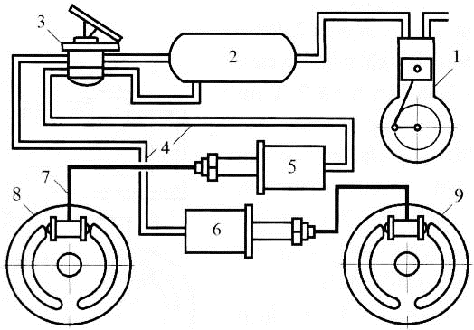
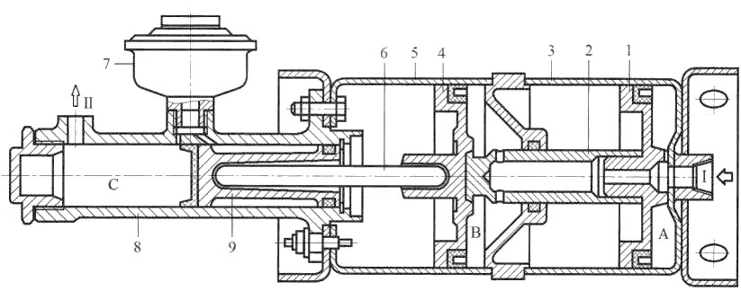

Hình 10.55. Sơ đồ hệ thống phanh thuỷ lực - khí nén
1. Máy nén khí; 2. Bình khí; 3. Van phân phối; 4. Đường ống dẫn khí; 5, 6. Cụm xi-lanh kép; 7. Đường ống dẫn chất lỏng; 8, 9. Cơ cấu phanh.
Hình 10.55 thể hiện sơ đồ hệ thống phanh dẫn động liên hợp, kết hợp dẫn động khí nén và chất lỏng. Hệ thống có máy nén khí (1), bình khí (2), van phân phối khí nén (3), các đường ống dẫn khí nén (4), xi-lanh kép (5, 6), các đường ống dẫn chất lỏng (7) và các cơ cấu phanh (8, 9).
Máy nén, bình khí và van phân phối có cấu tạo như ở hệ thống dẫn động khí nén. Xi-lanh kép có xi-lanh khí nén và xi-lanh chất lỏng (xem Hình 6.39).
Khi phanh, người lái đạp phanh, khí nén qua van phân phối đến xi-lanh khí nén của xi-lanh kép tác dụng vào pít-tông. Pít-tông khí nén qua thanh đẩy tác dụng vào pít-tông chất lỏng, đẩy chất lỏng từ xi-lanh chất lỏng trong xi-lanh kép đi đến các cơ cấu phanh tại các bánh xe.
Để giảm thiểu nhược điểm của dẫn động khí nén, các bộ phận phải bố trí sao cho các đường ống dẫn khí nén phải ngắn. Muốn như vậy, phải bố trí bình khí và các xi-lanh kép gần van phân phối.
Hình 10.56 thể hiện cụm xi-lanh kép của hệ thống phanh dẫn động liên hợp có sơ đồ ở Hình 10.55. Có hai pít-tông - xi-lanh khí lắp nối tiếp với nhau với mục đích làm tăng lực đẩy vào pít-tông chất lỏng mà không phải tăng đường kính xi-lanh khí.

Hình 10.56. Kết cấu xi-lanh kép
1, 4. Pít-tông khí; 2. Ống nối; 3, 5. Xi-lanh khí; 6. Thanh đẩy; 7. Bình dầu phanh; 8. Xi-lanh chất lỏng; 9. Pít-tông thủy lực.
Khí nén đi qua van phân phối và đường ống được dẫn vào cửa I đi vào khoang A bên phải pít-tông khí (1) và qua ống dẫn nằm trong pít-tông (1) và ống nối (2) đến khoang B bên trái pít-tông (4). Pít-tông (1) và (4) bị đẩy sang trái, thông qua thanh đẩy (6) tác dụng vào pít-tông chất lỏng (9), ép chất lỏng từ khoang C của xi-lanh chất lỏng (8) qua cửa II đến các cơ cấu phanh.